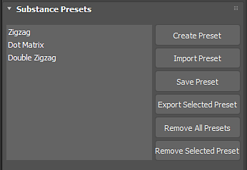

Substance files can contain embedded preset files. If a Substance has an embedded preset file, it will appear in the Substance Presets window. You can also create your own presets based on the settings you choose for the Substance Parameters.
